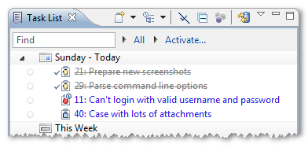
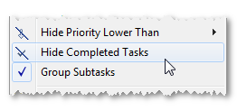
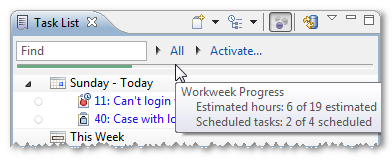
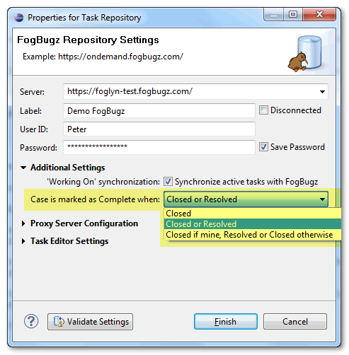

Task Completion
FogBugz provides simple workflow for the cases. Each case starts in Active state. When somebody takes care of this case and resolves the issue, case goes into Resolved state. At this point, case is automatically reassigned back to the person who originally reported the issue. This person verifies that the issue has been handled to his satisfaction, and closes the case. When case is Closed, it is finished, and FogBugz doesn’t display it anymore.
In Mylyn, Task is simply Complete or Incomplete. Mylyn displays completed tasks with overstrike:

Mylyn can optionally hide completed tasks from Task List by using Hide Completed Tasks command from context menu:

Mylyn uses task completion also when displaying scheduled tasks for the current week. It computes green progress bar based
on all cases versus completed cases (or estimated hours for normal/completed cases, when available):

Since Foglyn 1.6 there are three available modes that Foglyn can use to decide which cases from FogBugz should be treated as completed in Mylyn:
- only Closed cases
- Closed or Resolved cases
- Closed cases, when assigned to me, Closed or Resolved otherwise.
Third mode is useful to avoid hiding Resolved cases which are still assigned to you, so you should handle them before they
are Closed. By default Foglyn uses first mode, i.e. only Closed cases (in FogBugz) are treated as completed in Mylyn.
